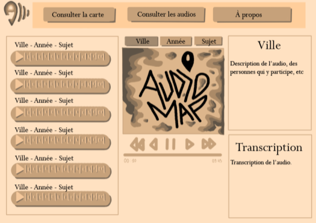
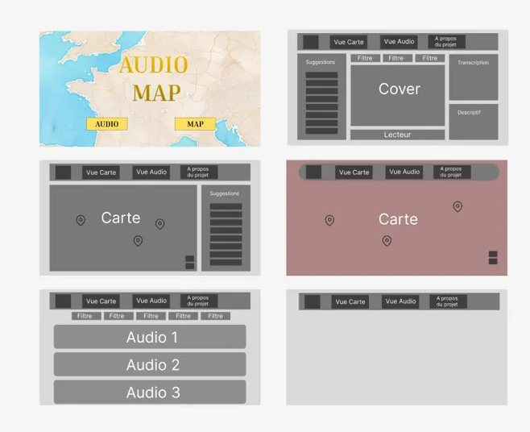
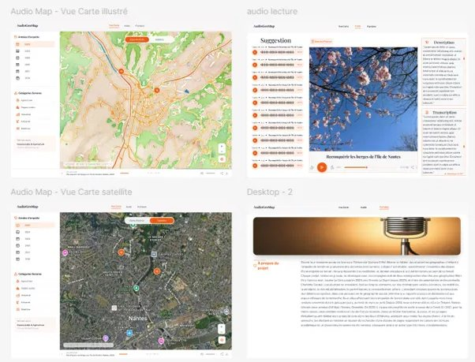

Structuring the data
Everything starts with a spreadsheet: I built a .CSV file from Excel to organize every sound documentary (city, year, theme, coordinates, audio file) so it could be integrated directly into Leaflet.js.
Wireframing the experience
Before writing a line of code, This logo combines a location pin (open at the base to form the letter 'A' for Audio) with three waves representing sound, topographic contour lines, and the letter 'M'. Initially validated for its structure during early sketches, the concept was subsequently developed into a more vibrant and dynamic color scheme based on client feedback. I sketched the navigation: a map view, an audio catalogue, filters by city/year/topic, and a player, all wired together from the start.




The result, live
The site is in progress, but already live and used by real students today. Browse it directly below, no need to open a new tab.